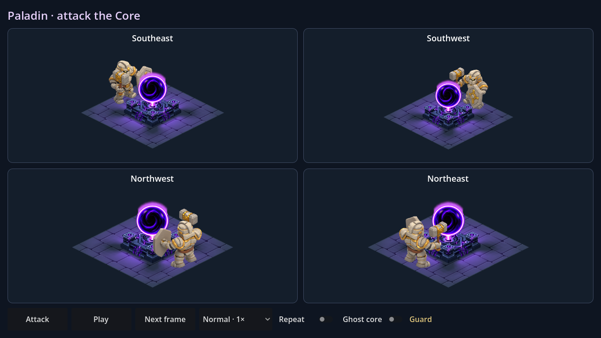

Paladin · attaque du cœur
Le paladin est centré face au cœur dans chaque direction, à la même distance du socle. Le marteau frappe le chapiteau du côté de sa main. Sprites, proportions, ombre, lumière et vortex sont conservés.

Ouvrir scenes/PaladinCoreAttack.tscn dans Godot puis F6. Répétition active au démarrage ; pause, pas-à-pas, ralenti et vitesse ×2 disponibles. Ghost core rend le cœur transparent pour examiner les contacts cachés.
Contact avec cœur transparent · Reproduction et limites · Attaque sur cible de test